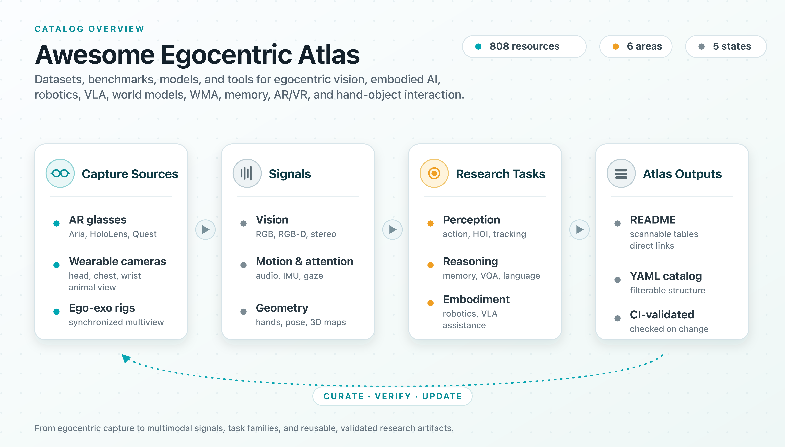
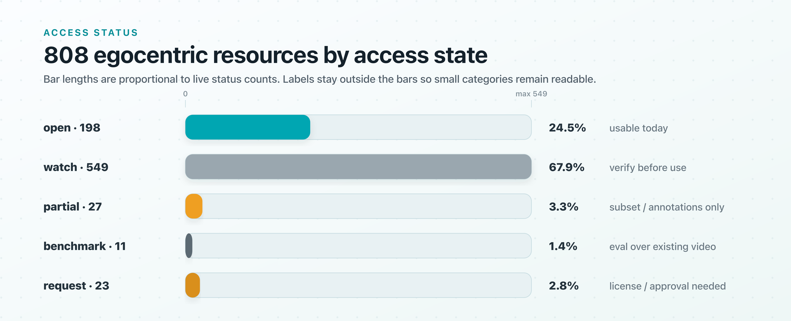
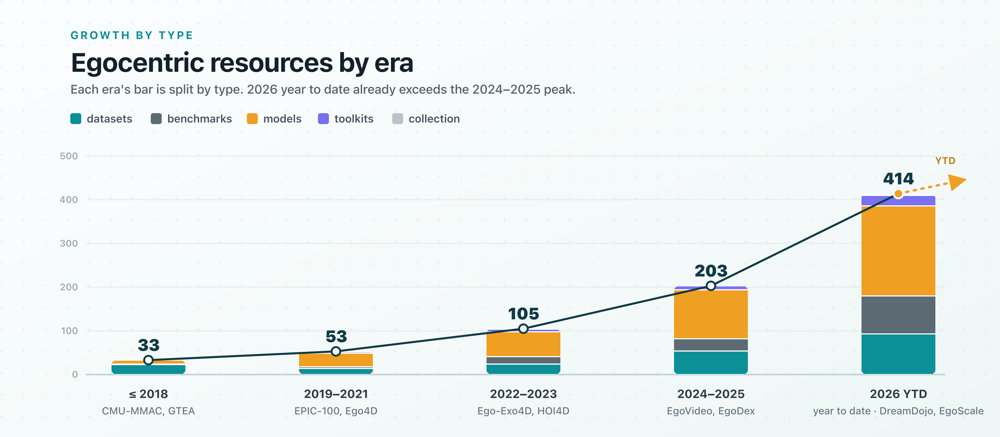

Awesome Egocentric Atlas
A curated map of egocentric AI — the datasets, benchmarks, models, and tools behind egocentric vision, embodied AI and robotics, video-language, long-context memory, AR/VR, and hand-object interaction.
- 476
- egocentric resources
- 127
- datasets
- 90
- benchmarks
- 235
- models
- 23
- toolkits
Datasets, benchmarks, models & tools
Filter by task, status, and date
Open access, MIT licensed

Egocentric AI, mapped
Updated 2026-06-21

Milestones
The landmark works that shaped egocentric AI — from the field's origins to its current frontier.
Catalog Explorer
Search by name, task, modality, status, kind, or research lane.
| Resource | Kind | Released | Status | Best Signal |
|---|
No resources match those filters.
Try a broader search, remove a lane, or reset the filters.
Research Lanes
Six entry points for the main ways people use egocentric data.
Access Reality
See what you can download today versus what needs a request, is benchmark-only, partial, or still unverified — before you plan experiments.


Add a Resource
Found something we're missing? Suggest it in a few steps — open a short issue and it flows into the catalog.